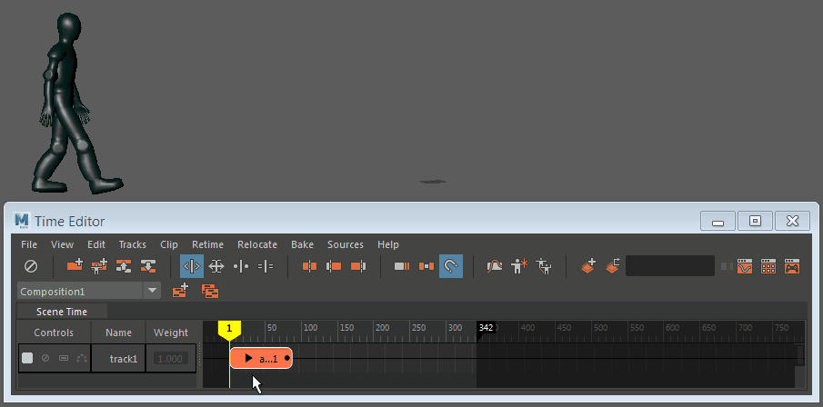
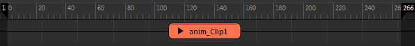

您可以使用时间编辑器中的“渐进”(Progressive)循环功能在单个片段中创建循环动画。将动画片段添加到时间编辑器后，时间编辑器会自动将有可能进行渐进动画循环的动画片段解释为默认使用此循环模式。但是，您始终可以在“属性编辑器”(Attribute Editor)的“之前的片段循环”(Clip Loop Before)/“之后的片段循环”(Clip Loop After)菜单中手动设置此选项。

从内容浏览器文件（RobotHumanoid.ma 和 walk1.ma）创建动画循环
从动画片段创建循环行走
- 将动画片段导入时间编辑器。
提示： 确保片段的开始帧和结束帧尽可能相似，以尽可能创建最平滑的过渡。
- 选择轨迹上的片段。
- 在属性编辑器(Attribute Editor)中，检查“之前的片段循环模式”(Clip Loop Before Mode)和“之后的片段循环模式”(Clip Loop After Mode)是否已设置为“渐进”(Progressive)。有关循环模式的说明，请参见时间编辑器中的循环类型。
注： 时间编辑器会自动检测有可能创建循环行走的片段，且应已设置此选项。
- 单击时间编辑器工具栏上的循环图标
 。
。
- 拖动动画片段的开始或结束位置。光标发生变化以显示当前处于循环模式。

- 播放或拖动动画。
注： 在曲线图编辑器(Graph Editor)中调整循环行走。